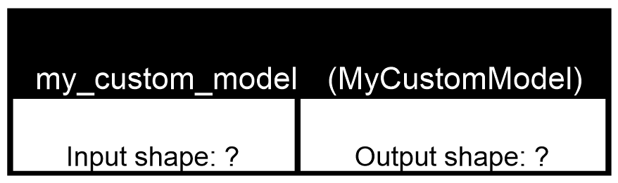
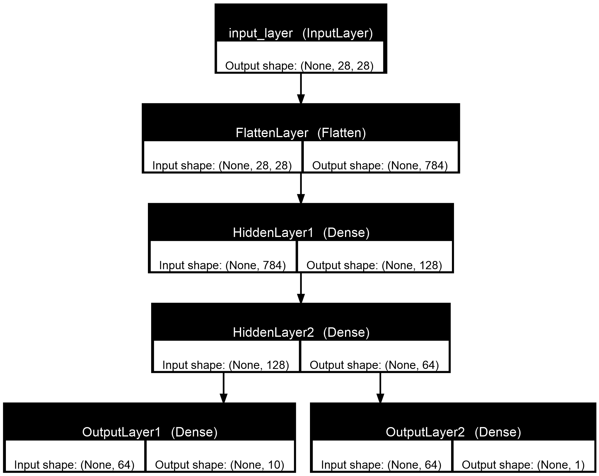

Keras Model Subclassing
Model Subclassing
클래스로 모델을 정의하고 두 출력을 학습한다.
__init__ → build → call → compile → fit → evaluate / predict
학습 목표
- 클래스·Layer 객체·Weight·순전파를 구분한다.
- 두 정답과 출력 Key·Shape의 대응을 설명한다.
- Build 전후의 Summary와 변수 수를 읽는다.
- 학습 모델과 별도 시각화 모델을 구분한다.
- Loss 가중합과 출력별 Metric을 해석한다.
- 원문·저장 결과·보완 검토를 나누어 복습한다.
[S1] p.228~234 · 원본 Notebook 60번: 26 Cell, 저장 출력 22개, 그림 2개. 새 학습 결과는 없으며 이 HTML은 Python을 실행하지 않는다.
실습 목표·원본 범위
클래스로 정의한 모델을 실제로 학습한다
MNIST 이미지 하나로 숫자 0~9와 짝·홀수를 분류한다.
이번에는 모델의 Layer·Weight·순전파를 클래스 안에서 나누어 정의하고,
학습은 다시 compile()·fit()에 맡긴다.
교안 원문 · Cell 1
## Model SubClassing
### 클래스를 사용해서 다중 출력하는 모델구조 생성| 단계 | 이번 원본 |
|---|---|
| 문제 정의 | 숫자 분류와 짝홀 분류 |
| Dataset | MNIST Training·Test 로드 |
| 전처리 | 짝홀 정답 생성 → 숫자 One-Hot → X 정규화 |
| Train / Validation / Test | fit에서 Training 배열의 20%를 Validation으로 사용, Test는 별도 평가 |
| Model | MyCustomModel 정의 → 객체 생성 → 명시적 Build |
| 구조 확인 | Summary·Layer 목록·그림 두 개 |
| compile | 출력 Key별 Loss·가중치·Metric과 Adam 연결 |
| fit | 10 Epoch 학습 |
| evaluate | 두 과제의 Test 성능 |
| predict | 두 배열을 담은 딕셔너리 반환 |
history 변수에 대입하지 않는다.
Loss 곡선·EarlyStopping·Checkpoint·학습 모델 저장은 없다.
두 PNG는 구조 그림이다.
[S1] p.228~234, Cell 1~26. 데이터·단계 해석은 [S2] Step 1·2 재구성.
핵심 개념
모델 정의 방식과 학습 제어 방식을 구분한다
| 구분 | 핵심 질문 |
|---|---|
| Sequential | Layer를 어떤 순서로 쌓는가? |
| Functional API | 입력·출력 Tensor를 어떻게 연결하는가? |
| Model Subclassing | 모델을 클래스·속성·메서드로 어떻게 정의하는가? |
| Custom Training Loop | 예측·손실·미분·업데이트를 어떤 절차로 실행하는가? |
keras.Model → MyCustomModel → model은
부모 클래스, 사용자 정의 클래스, 실제 객체의 관계다.
Keras Model의 공통 학습·평가·예측 기능을 처음부터 모두 다시 구현하는 것이 아니다.
| 단계 | 역할 | 이번에 변하는 것 |
|---|---|---|
| __init__() | 사용할 Layer를 속성으로 보관 | 내부 Layer 객체 |
| build(input_shape) | 입력 크기에 맞춰 내부 Layer 준비 | Weight·Build 상태 |
| call(inputs, training=False) | 실제 순전파와 반환 구조 | 출력 Tensor |
| compile() | Loss·Optimizer·Metric 연결 | 학습 설정 |
| fit() | 정답을 사용한 학습 | 모델 변수·Optimizer 상태 |
| evaluate / predict | 평가 / 예측 | 지표 / 예측 배열 |
| 항목 | ML 24 | ML 25 |
|---|---|---|
| 모델 정의 | Functional API | Model 상속 |
| 은닉층·출력 | 128 → 숫자 Logits 하나 | 128 → 64 → 숫자·짝홀 두 출력 |
| 정답 | 정수 숫자 Label | 숫자 One-Hot·짝홀 0/1 |
| 학습 제어 | 직접 반복문·GradientTape | compile·fit |
| 학습 설정 | 1 Epoch·Batch 64 | 10 Epoch·기본 Batch 32 |
이번 클래스는 train_step()을 재정의하거나 직접 GradientTape 루프를 작성하지 않는다.
Subclassing 자체가 Custom Loop를 요구하는 것도 아니다.
[S1] p.229·233, [S2] 이전 단원 비교와 API 보완 [D1], [D2].
개발 환경·Cell 순서
활성 코드와 주석 처리된 대안을 나눈다
| Cell | 내용 | 확인할 부분 |
|---|---|---|
| 1 | 제목 | 다중 출력 모델 |
| 2 | Channel 축 추가 방법 | 모두 주석 |
| 3~5 | Import·설정·로드 | NumPy 포함, lr=0.001, epochs=10 |
| 6~8 | 전처리 | 짝홀 → One-Hot → X 정규화 |
| 9 | 클래스 정의 | __init__·build·call |
| 10~11 | 객체 생성·Summary | Build 전 unbuilt |
| 12~13 | Sample 호출 대안 | 주석 |
| 14~16 | 명시적 Build·Summary·조회 | build((None,784)) |
| 17~18 | 그림 두 개 | 학습 모델과 별도 시각화 모델 |
| 19~20 | compile·fit | 딕셔너리 Key |
| 21~23 | 평가·예측·배열 조회 | 저장 결과 |
| 24~25 | 개별 예측 | Index 1과 Index 5 |
| 26 | 빈 Cell | 실행 내용 없음 |
교안 원문 · Cell 2
# 마지막에 축 추가하는 코드
# 방법1)
# X_train = tf.expand_dims(X_train,axis=-1)
# X_test = tf.expand_dims(X_test,axis=-1)
# 방법2)
# X_train = X_train[..., tf.newaxis]
# X_test = X_test[..., tf.newaxis]
축 추가 코드는 모두 주석이다.
이번 활성 X를 (N,28,28,1)로 바꾸어 설명하지 않는다.
Sample 호출 방식, 짝홀 출력층을 Flatten에 연결하는 Build 대안,
딕셔너리 Metric, 설치 명령도 주석 여부를 확인한다.
교안 원문 · Cell 3
import numpy as np
import tensorflow as tf
from tensorflow import keras교안 원문 · Cell 4
#하이퍼 파라미터
lr=0.001
epochs=10- 무엇을 하는가?
- NumPy·TensorFlow·Keras와 학습 설정을 준비한다.
- 왜 필요한가?
- 배열 처리·클래스 정의·학습에 필요한 이름을 사용한다.
- 입력 Shape·대상
- 실제 데이터 입력 없음.
- 출력 Shape·반환값
- np, tf, keras, lr=0.001, epochs=10.
- 실행 후 변화
- 설정만 준비한다. 모델은 아직 생성하지 않는다.
[S1] p.228, Cell 2~4 및 각 Cell의 실행·주석 상태. [S2] 원문 대조.
Dataset·X/y
같은 이미지에서 두 종류의 정답을 사용한다
교안 원문 · Cell 5
#데이타 불러오기
(X_train,y_train),(X_test,y_test)=tf.keras.datasets.mnist.load_data()- 무엇을 하는가?
- MNIST 이미지와 숫자 Label을 로드한다.
- 왜 필요한가?
- 두 과제의 공통 이미지와 원본 숫자 정답이 필요하다.
- 입력 Shape·대상
- Loader 호출, 별도 배열 인자 없음.
- 출력 Shape·반환값
- Training X (60000,28,28), y (60000,); Test X (10000,28,28), y (10000,).
- 실행 후 변화
- 네 배열을 준비한다. 짝홀 Label은 아직 없다.
Step 1·2의 Dataset 보완 MNIST는 28×28 Grayscale 이미지, Training 60,000개·Test 10,000개이며 원래 Pixel은 0~255다. 이 Shape는 Loader 구조를 설명한 것이고 원본의 별도 Shape 출력은 아니다.
| 변수 | Training / Test | 의미 |
|---|---|---|
| X | X_train / X_test | 두 과제가 공유하는 이미지 |
| 숫자 y | y_train / y_test | 숫자 Class 정답, 이후 One-Hot |
| 짝홀 y | y_train_even_odd / y_test_even_odd | 숫자 정답에서 생성, 짝수 1·홀수 0 |
설명용으로 실제 숫자가 4이면 숫자 Label은 4, 짝홀 Label은 1이다.
숫자·짝홀 정답을 입력 Feature에 붙이는 구조가 아니다.
X_train[i]와 두 정답의 [i]는 반드시 같은 Sample이어야 한다.
[S1] p.228 Cell 5~7, p.233 fit. Dataset 규모·의미는 [S2] 보완 [D3].
전처리·정답 구조
짝홀 Label을 먼저 만들고 숫자만 One-Hot으로 바꾼다
교안 원문 · Cell 6
#짝/홀수 정답 레이블 만들기(짝수는 1,홀수 는 0)
y_train_even_odd = np.array([1 if x % 2==0 else 0 for x in y_train])
y_test_even_odd = np.array([1 if x % 2==0 else 0 for x in y_test])- 무엇을 하는가?
- 숫자 Label에서 짝수 1·홀수 0 배열을 만든다.
- 왜 필요한가?
- 두 번째 출력층의 학습 정답이 필요하다.
- 입력 Shape·대상
- 숫자 정답 (60000,), (10000,).
- 출력 Shape·반환값
- 짝홀 정답도 (60000,), (10000,).
- 실행 후 변화
- 새 짝홀 배열이 생기며 숫자 y는 아직 정수다.
| 실제 숫자 | x % 2 == 0 | 생성 Label |
|---|---|---|
| 0·2·4·6·8 | True | 1 — 짝수 |
| 1·3·5·7·9 | False | 0 — 홀수 |
나머지 값을 그대로 쓰는 것이 아니다.
리스트 내포의 x는 이미지가 아니라 숫자 Label 하나다.
교안 원문 · Cell 7
#숫자 분류 정답 레이블 원핫 인코딩(이때는 손실함수를 categorical_crossentropy)
y_train = keras.utils.to_categorical(y_train)
y_test = keras.utils.to_categorical(y_test)- 무엇을 하는가?
- 숫자 정답만 One-Hot으로 변환한다.
- 왜 필요한가?
- 숫자 출력의 Categorical Cross-Entropy와 연결한다.
- 입력 Shape·대상
- 숫자 정답 (N,).
- 출력 Shape·반환값
- 숫자 정답 (N,10); 짝홀 정답 (N,) 유지.
- 실행 후 변화
- y_train·y_test가 One-Hot 배열로 재대입된다.
One-Hot 이후 Cell 6만 다시 실행하면 정수 하나가 아니라 배열에 조건식을 적용하게 된다. 재실습에서는 현재 y의 상태와 Cell 실행 순서를 함께 본다.
[S1] p.228 Cell 6~7. 예시·Shape·재실행 해석은 [S2] 보완.
전처리·dtype
이미지 수와 Shape는 그대로, 값과 dtype만 변환한다
교안 원문 · Cell 8
#데이타 전처리(정규화)
X_train = X_train.astype(np.float32)/255.
X_test = X_test.astype(np.float32)/255.- 무엇을 하는가?
- 이미지를 float32로 바꾸고 255로 나눈다.
- 왜 필요한가?
- 모델 입력의 수치 범위를 변환한다.
- 입력 Shape·대상
- Training (60000,28,28), Test (10000,28,28).
- 출력 Shape·반환값
- 입력과 같은 Shape.
- 실행 후 변화
- X의 값·dtype이 바뀐다. 이미지 수·높이·너비와 y는 그대로다.
| 배열 | Shape | 내용 |
|---|---|---|
| X_train | (60000,28,28) | float32로 변환한 이미지 |
| y_train | (60000,10) | 숫자 One-Hot |
| y_train_even_odd | (60000,) | 짝홀 0/1 |
| X_test | (10000,28,28) | float32로 변환한 이미지 |
| y_test | (10000,10) | 숫자 One-Hot |
| y_test_even_odd | (10000,) | 짝홀 0/1 |
원문은 X의 float32 변환을 명시한다. 숫자·짝홀 y의 실제 dtype을 별도로 출력한 것은 아니므로 저장 결과처럼 특정 dtype을 덧붙이지 않는다.
[S1] p.228 Cell 5~8. Shape·수치 예시·중복 실행은 [S2] 보완.
그림처럼 이해·Shape 흐름
공유 은닉층 뒤에서 두 출력으로 분기한다
(B,28,28)
(B,784)
(B,128)
(B,64)
(B,10)
first_output · 숫자 확률
(B,1)
second_output · 짝수 확률
설명용 HTML 흐름도. 원본 PNG 출력은 뒤의 시각화 카드에서 별도로 보여 준다.
| 단계 | X | 숫자 y | 짝홀 y |
|---|---|---|---|
| 로드 직후 Training | (60000,28,28) | (60000,) | 아직 없음 |
| 전처리 후 Training | (60000,28,28) | (60000,10) | (60000,) |
| fit의 학습 부분 · 계산 | (48000,28,28) | (48000,10) | (48000,) |
| Validation 부분 · 계산 | (12000,28,28) | (12000,10) | (12000,) |
| 일반 Training Batch · 기본 32 | (32,28,28) | (32,10) | (32,) |
| 한 장 추론 | (1,28,28) | 정답 확인용 (10,) | 정답 확인용 스칼라 |
first_output에 (B,10),
second_output에 (B,1)이 들어 있다.
B는 Sample 수이며 None은 고정하지 않은 Batch 크기를 뜻한다.
Rank는 축의 개수, Shape는 각 축의 길이다.
Flatten은 Batch 축을 유지하며 두 공간 축을 784로 펼친다.
예를 들어 첫 Dense의 행렬곱은 (B,784) @ (784,128)로 안쪽 축이 맞아야 한다.
[S1] p.229 call과 p.233 fit을 풀어 쓴 [S2] Shape·분리 계산. 기본 Batch 설명 [D4], Dense 설명 [D5].
Model Architecture·전체 코드
MyCustomModel 클래스 원문
교안 원문 · Cell 9
#1.keras의 Model을 상속받은 하위 클래스(서브클래스)로 모델 정의
# 서브 클래싱 방식이라 한다
class MyCustomModel(keras.Model):
#2.생성자에서 층 정의(단,입력층은 제외)
def __init__(self):
super(MyCustomModel,self).__init__()
# Define layers
#※입력층은 정의하지 않는다
#1. Flatten층
self.flatten=keras.layers.Flatten(name='FlattenLayer')
#노드수와 활성화 함수등 층에 설정하는 값들을 생성자의 인자로 받을 수도 있다
#2.첫번째 은닉층
self.hidden1 = keras.layers.Dense(units=128,activation='relu',kernel_initializer='he_normal',name='HiddenLayer1')
#3.두번째 은닉층
self.hidden2 = keras.layers.Dense(units=64,activation='relu',kernel_initializer='he_normal',name='HiddenLayer2')
#4.출력층
#숫자 분류용
self.outputs_1 = keras.layers.Dense(10,activation='softmax',name='OutputLayer1')
#짝/홀수 분류용
#은닉층2의 출력값을 입력값으로
self.outputs_2 = keras.layers.Dense(1,activation='sigmoid',name='OutputLayer2')
#3.build(self,입력텐서) 오버라이딩-입력 형상을 명시적으로 정의(summary()호출시 ?를 데이타 형상으로 표시하기 위함:이전에는 summary()호출시 ValueError)
#※서브 클래싱에서는 일반적으로 build() 메서드를 명시적으로 호출하기 보다는
#모델을 실제로 한 번 호출(모델객체(샘플 데이타))하여 자동으로 빌드하는 방식이 더 자주 사용된다
def build(self, input_shape):
super(MyCustomModel, self).build(input_shape)
print('build 호출됨')
self.flatten.build(input_shape)
self.hidden1.build(self.flatten.compute_output_shape(input_shape))
self.hidden2.build(self.hidden1.compute_output_shape(input_shape))
self.outputs_1.build(self.hidden2.compute_output_shape(input_shape))
#입력층 + 출력층 신경망용
#self.outputs_2.build(self.flatten.compute_output_shape(input_shape))
#입력층 + 은닉층1+은닉층2+ 출력층 신경망용
self.outputs_2.build(self.hidden2.compute_output_shape(input_shape))
#4.call(self,입력텐서) 오버라이딩-층의 연결 구조를 동적으로 정의
#모델의 fit()호출시 출력됨
#training=False 인자는 학습시 나 추론시 적용할 코드가 다른 경우 사용한다
#예를들면 과적합 방지를 위한 Dropout층은 학습시에는 적용하나 추론시는 적용하지 않는다
def call(self,inputs,training=False):
print('call 호출됨')
# Forward pass
flatten=self.flatten(inputs)
hidden1=self.hidden1(flatten)
hidden2=self.hidden2(hidden1)
outputs_1=self.outputs_1(hidden2)
outputs_2=self.outputs_2(hidden2)
#출력텐서 반환
#사전(dict) 형태로 반환.
#※이는 컴파일 단계(compile())에서 loss에 지정한 값(dict) 일치하도록 설정
return {
'first_output': outputs_1, # 사전(dict) 형태로 출력
'second_output': outputs_2
}- 무엇을 하는가?
- Model을 상속한 클래스의 Layer·Build·순전파를 정의한다.
- 왜 필요한가?
- 모델 구성 요소와 계산 책임을 클래스 안에 나누어 표현한다.
- 입력 Shape·대상
- 클래스 정의 시 실제 이미지 입력 없음.
- 출력 Shape·반환값
- MyCustomModel 클래스 정의.
- 실행 후 변화
- 이 Cell만 실행하면 설계가 준비된다. 실제 model 생성은 Cell 10이다.
주석 처리된 출력층 Build 대안을 활성 코드로 바꾸지 않는다. 아래 카드에서는 같은 클래스의 각 메서드를 역할·상태·Shape로 나누어 해설한다.
[S1] p.229 Cell 9. 코드 문자열은 첨부 원본 Notebook에서 가져왔다.
클래스·속성·생명주기
Layer 객체는 준비하고, 같은 객체로 계산한다
| 속성 | Layer 설정 | 이후 사용 |
|---|---|---|
| self.flatten | FlattenLayer | 이미지 펼치기 |
| self.hidden1 | 128 · ReLU · he_normal | 첫 은닉층 |
| self.hidden2 | 64 · ReLU · he_normal | 둘째 은닉층 |
| self.outputs_1 | 10 · Softmax | 숫자 출력 |
| self.outputs_2 | 1 · Sigmoid | 짝홀 출력 |
super(MyCustomModel,self).__init__()는 부모 Model의 초기화 절차다.
self 속성에 보관한 Layer를 build와 call에서 계속 사용한다.
Layer마다 새 객체를 만들어 계산하는 것이 아니다.
- 무엇을 하는가?
- 객체 생성 시 사용할 Layer를 속성으로 만든다.
- 왜 필요한가?
- 다른 메서드에서도 같은 Layer와 학습 변수를 사용한다.
- 입력 Shape·대상
- __init__에는 실제 이미지 인자가 없다.
- 출력 Shape·반환값
- flatten·hidden1·hidden2·outputs_1·outputs_2 속성.
- 실행 후 변화
- Layer 객체를 준비하며 정답 기반 업데이트는 아직 없다.
Step 1·2 API 보완 Keras는 속성으로 할당한 내부 Layer의 변수를 추적한다. 입력 크기에 의존하는 Weight 준비와 Layer 객체 생성은 구분할 수 있다.
keras.Input()을 적지 않았다는 뜻이다.
실제 입력이 없다는 뜻이 아니다.
은닉층 두 개에만 he_normal을 명시하며 출력층 초기화는 별도 지정하지 않는다.
self.outputs_1은 Layer 객체,
call의 지역 변수 outputs_1은 그 Layer를 이번 입력에 적용한 Tensor다.
[S1] p.229 __init__·call. 속성 추적·지연 준비는 [S2] 보완 [D1], [D2].
객체 생성·원본 Summary
Build 전의 0은 영원히 Parameter가 없다는 뜻이 아니다
교안 원문 · Cell 10
#모델 클래스로 모델객체 생성
model = MyCustomModel()교안 원문 · Cell 11
#Output Shape 이 ?로만 표시되는 이유는 모델이 아직 빌드되지 않았기 때문이다
#서브클래싱 방식에서는 Keras가 레이어의 입력과 출력 크기를 추론하지 않으므로
#모델을 한 번 호출하거나(model (샘플 데이타)) 혹은 build()를 명시적으로 호출해야 한다
#샘플 데이타 이때 샘플 데이타의 차원은 (배치 크기,피처 수)이다
#단, Flatten레이가 정의 되어 있음으로 (1,28,28) 즉 샘플 하나(이미지 하나)의 shape은 28x28
model.summary()- 무엇을 하는가?
- 모델 객체를 생성하고 현재 상태를 조회한다.
- 왜 필요한가?
- 클래스 정의·객체 생성·Build 상태를 구분한다.
- 입력 Shape·대상
- 실제 이미지 입력 없음.
- 출력 Shape·반환값
- model 객체와 Summary.
- 실행 후 변화
- Layer 객체는 준비되지만 입력에 맞춘 Build는 아직 없다.
Cell 11 저장 Summary · 표로 재구성
| Layer | Output Shape | Param # |
|---|---|---|
| FlattenLayer | ? | 0 (unbuilt) |
| HiddenLayer1 | ? | 0 (unbuilt) |
| HiddenLayer2 | ? | 0 (unbuilt) |
| OutputLayer1 | ? | 0 (unbuilt) |
| OutputLayer2 | ? | 0 (unbuilt) |
모델 이름은 my_custom_model이다.
이 기록은 현재 Layer가 unbuilt라는 뜻이며
모델 설계에 학습 변수가 영원히 없다는 뜻이 아니다.
뒤의 명시적 Build 전후를 비교한다.
[S1] p.229~230, Cell 10~11 저장 출력.
명시적 Build·주석 대안
Build에 전달한 Shape와 실제 이미지를 구분한다
교안 원문 · Cell 12
# #방법1) 샘플 데이타 사용하여 모델 호출
# sample_input = np.random.random((1, 28, 28)) # 임의의 샘플 데이터 (샘플크기 1, 28x28 이미지)
# model(sample_input) # 모델을 호출하여 빌드(모델 클래스의 오버라이딩한 build()와 call()이 호출 된다)교안 원문 · Cell 13
# model.summary()위 Sample 호출 방식과 그 뒤 Summary는 모두 주석이다. 원본에서 두 방법을 모두 실행한 것으로 읽지 않는다.
교안 원문 · Cell 14
#방법2) 명시적으로 build
#model.build(입력텐서의 shape) 이때 shape은 배치차원도 넣어야한다
#이때는 (배치사이즈,피처수)
model.build((None,784))원본 저장 출력 · Cell 14
build 호출됨
- 무엇을 하는가?
- 사용자 정의 build 메서드를 명시적으로 호출한다.
- 왜 필요한가?
- 입력 크기에 맞게 내부 Layer의 변수·상태를 준비한다.
- 입력 Shape·대상
- 실제 배열이 아닌 (None,784) Shape 튜플.
- 출력 Shape·반환값
- 내부 Layer의 Build 상태·Weight와 출력문 한 줄.
- 실행 후 변화
- 모델은 Build되지만 X_train은 reshape되지 않는다.
| 구분 | 원문 구조 |
|---|---|
| 명시적 Build 입력 | (None,784) |
| 실제 학습 이미지 | (N,28,28) |
| 실제 Flatten 출력 | (N,784) |
| 첫 Dense Kernel | 784개 Feature를 받도록 준비 |
compute_output_shape()는 주어진 입력 Shape에서 출력 Shape를 계산한다.
실제 Pixel을 통과시켜 예측하는 call과는 다르다.
Dense는 마지막 축을 Feature로 처리한다. 실제 중간 Shape와 build에서 준비한 폭을 함께 확인한다. 원문의 super.build 호출 위치와 내부 Build 코드는 여기서 수정하지 않는다. 일반적인 model(x) 호출이 Build를 거쳐 call로 이어질 수 있다는 설명과, 이번 활성 경로는 구분한다.
[S1] p.229 build, p.230 Cell 12~14. 주의점은 [S2] 보완 [D2], [D5].
Build 이후·Parameter
109,451개 Parameter와 여덟 학습 변수 Tensor
교안 원문 · Cell 15
#서브 클래스로 모델 생성시는 Output Shape이 multiple표현된다
model.summary()Cell 15 저장 Summary · 표로 재구성
| Layer | Output Shape | Param # |
|---|---|---|
| FlattenLayer | (None,784) | 0 |
| HiddenLayer1 | (None,128) | 100,480 |
| HiddenLayer2 | (None,64) | 8,256 |
| OutputLayer1 | (None,10) | 650 |
| OutputLayer2 | (None,1) | 65 |
주석은 multiple을 언급하지만 저장 결과에는 구체적인 Shape가 표시되어 있다. 이 차이를 보존하고 모든 Keras 환경에서 항상 같은 표시라고 일반화하지 않는다.
| Layer | Kernel | Bias | 합계 |
|---|---|---|---|
| HiddenLayer1 | (784,128) → 100,352 | 128 | 100,480 |
| HiddenLayer2 | (128,64) → 8,192 | 64 | 8,256 |
| 숫자 출력 | (64,10) → 640 | 10 | 650 |
| 짝홀 출력 | (64,1) → 64 | 1 | 65 |
Dense 네 개의 Kernel·Bias 네 쌍이므로 학습 변수 Tensor는 여덟 개다. 공유 은닉층을 두 출력에 대해 중복 계산하거나 Parameter 수에 Batch 크기를 곱하지 않는다.
교안 원문 · Cell 16
print(f'모델명:{model.name}')
print(f'층들:{model.layers}')원본 저장 출력 · Cell 16
모델명:my_custom_model
층들:[<Flatten name=FlattenLayer, built=True>, <Dense name=HiddenLayer1, built=True>, <Dense name=HiddenLayer2, built=True>, <Dense name=OutputLayer1, built=True>, <Dense name=OutputLayer2, built=True>]
- 무엇을 하는가?
- 이름·내부 Layer·Build 상태·Parameter 수를 조회한다.
- 왜 필요한가?
- 모델 준비 상태를 확인한다.
- 입력 Shape·대상
- 기존 model 객체.
- 출력 Shape·반환값
- Summary·모델 이름·다섯 Layer의 built=True 표시.
- 실행 후 변화
- 조회·표시만 수행하며 학습하지 않는다.
MyCustomModel은 클래스, model은 변수,
my_custom_model은 저장 출력의 Keras 모델 이름이다.
[S1] p.230~231 Cell 15~16. 변수 Tensor·행렬 크기는 [S2] 계산.
순전파·출력 연결
call은 딕셔너리를 반환하고 fit이 학습을 제어한다
| 구분 | 숫자 출력 | 짝홀 출력 |
|---|---|---|
| 클래스 속성 | self.outputs_1 | self.outputs_2 |
| Layer name | OutputLayer1 | OutputLayer2 |
| call 반환 Key | first_output | second_output |
| 정답 Key | first_output | second_output |
| 출력 Shape | (B,10) | (B,1) |
| 활성화 | Softmax | Sigmoid |
| 정답 | One-Hot (B,10) | 짝수 1·홀수 0 (B,) |
| 예측 의미 | 숫자별 확률 | 짝수일 확률 |
- 무엇을 하는가?
- 이미지를 Flatten·두 은닉층에 통과시킨 뒤 두 출력을 반환한다.
- 왜 필요한가?
- 실제 데이터의 계산 순서와 외부 출력 구조를 정의한다.
- 입력 Shape·대상
- inputs (B,28,28).
- 출력 Shape·반환값
- 딕셔너리 first_output (B,10), second_output (B,1).
- 실행 후 변화
- 준비된 모델의 순전파 결과를 만든다. call 자체에 학습 반복문은 없다.
두 출력은 모두 hidden2를 사용한다. 내부 Layer 이름과 반환 Key가 다르므로 Loss·정답·예측 접근을 반환 Key에 맞춘다. 이번 모델이 dict를 반환하는 것이지 모든 Subclass 모델이 dict만 반환해야 하는 것은 아니다.
print('call 호출됨')이 fit·evaluate·predict 로그에 나타난다.
그래프 실행에서 Python print는 추적 시점에 실행될 수 있으므로
표시된 문구 수를 실제 Batch 계산 횟수로 세지 않는다.
각 문구의 상세 발생 원인은 저장 기록만으로 확정하지 않는다.
[S1] p.229 call, p.233~234 로그. 모드·추적 설명은 [S2] 보완 [D1], [D7].
원본 그림·Cell 17
Subclass 모델의 직접 시각화 결과
교안 원문 · Cell 17
#모델 구조 시각화
#※서브 클래싱으로 똑같이 시각화할때는 모델명만 나온다
#즉 plot_model() 함수는 정적 모델 구조를 시각화한다
#서브클래싱에서는 동적인 모델 정의 방식을 사용하므로 모델명만 나온다
#방법은 Functional API로 변환하여 시각화한다
#!conda install pydot
#!conda install graphviz
keras.utils.plot_model(model,show_layer_names=True,show_shapes=True,to_file='model_plot.png')
- 무엇을 하는가?
- 기존 Subclass 모델의 구조를 그림으로 표시한다.
- 왜 필요한가?
- 직접 plot_model을 호출한 결과를 확인한다.
- 입력 Shape·대상
- Dataset이 아닌 model 객체.
- 출력 Shape·반환값
- model_plot.png와 Notebook 이미지.
- 실행 후 변화
- 그림을 생성한다. 이번 원본 그림은 내부 Layer를 펼쳐 보여 주지 않는다.
그림에는 my_custom_model (MyCustomModel),
Input shape: ?, Output shape: ?가 표시된다.
앞에서 Build한 변수나 모델의 학습 가능성이 사라졌다는 뜻이 아니다.
모델 상태와 그림의 표현 범위를 나눈다.
pydot·graphviz 설치 명령은 주석이라 자동 실행되지 않는다. 그림 생성 오류와 모델 학습 오류를 구분한다. 모든 Subclass 모델의 모든 환경에서 그림이 반드시 같다고 일반화하지 않는다.
[S1] p.231~232 Cell 17 및 첨부 Notebook의 저장 PNG. [S2] 시각화 해석 [D8].
원본 그림·Cell 18
구조가 비슷한 새 모델은 같은 Weight의 모델이 아니다
교안 원문 · Cell 18
#Functional API로 변환하여 시각화
inputs = keras.Input(shape=(28, 28))
flatten = keras.layers.Flatten(name='FlattenLayer')(inputs)
hidden1 = keras.layers.Dense(128, activation='relu', name='HiddenLayer1')(flatten)
hidden2 = keras.layers.Dense(64, activation='relu', name='HiddenLayer2')(hidden1)
outputs_1 = keras.layers.Dense(10, activation='softmax', name='OutputLayer1')(hidden2)
outputs_2 = keras.layers.Dense(1, activation='sigmoid', name='OutputLayer2')(hidden2)
# Functional API 모델로 시각화
model_for_visualization = keras.Model(inputs=inputs, outputs=[outputs_1, outputs_2])
keras.utils.plot_model(model_for_visualization, show_shapes=True, show_layer_names=True,to_file="model_plot.png")
- 무엇을 하는가?
- 새 Layer로 별도 Functional 모델을 만들어 시각화한다.
- 왜 필요한가?
- 내부 연결과 Shape를 그림으로 확인한다.
- 입력 Shape·대상
- Input 규격 (28,28)와 새 Layer 객체.
- 출력 Shape·반환값
- model_for_visualization 객체와 model_plot.png.
- 실행 후 변화
- 별도 모델이 생성된다. 실제 학습 모델을 변환·Weight 복사하는 코드는 없다.
| 항목 | 실제 학습 모델 | 시각화용 모델 |
|---|---|---|
| 변수 | model | model_for_visualization |
| 정의 | MyCustomModel | 새 Functional 모델 |
| Layer 객체 | 클래스의 기존 Layer | 새로 만든 Layer |
| 은닉층 초기화 | he_normal 명시 | 별도 명시 없음 |
| 출력 구조 | 딕셔너리 | 리스트 |
| 이후 compile·fit | 대상 | 원문에서 학습하지 않음 |
Cell 17·18 모두 model_plot.png로 저장하므로 같은 경로에서는 뒤의 파일이 덮어쓴다.
Notebook에는 Cell별 그림이 남는다.
이 HTML에서는 두 원본 PNG를 서로 다른 이름으로 보관했다.
PNG는 모델 복원용 Weight 파일이 아니다.
[S1] p.232 Cell 18·저장 PNG, p.229의 학습 모델과 대조한 [S2] 설명.
compile·Optimizer
두 출력의 학습 규칙을 딕셔너리 Key로 연결한다
교안 원문 · Cell 19
#컴파일
optimizer = keras.optimizers.Adam(learning_rate=lr)
#※서브 클래싱으로 모델 컴파일시 층 이름을 지정하지 않고
#call()메소드에서 반환한 딕셔너리의 Key를 사용해야 한다
#그렇지 않으면 에러 발생
#이에 반해 함수형 API는 내가 정한 층 이름으로 제어할 수 있다
model.compile(optimizer=optimizer,
loss={'first_output':'categorical_crossentropy','second_output':'binary_crossentropy'},
loss_weights={'first_output':1,'second_output':0.5},
#metrics={'first_output':'acc','second_output':'acc'}
metrics=['acc','acc']
)- 무엇을 하는가?
- 출력별 Loss·가중치·Metric과 Adam을 설정한다.
- 왜 필요한가?
- fit이 어떤 기준으로 학습할지 정한다.
- 입력 Shape·대상
- 이미지가 아니라 학습 설정.
- 출력 Shape·반환값
- 기존 model의 학습 규칙.
- 실행 후 변화
- 설정만 준비한다. 정답 기반 Parameter 업데이트는 아직 없다.
| Key | 정답 | 활성화 | Loss |
|---|---|---|---|
| first_output | 숫자 One-Hot (B,10) | Softmax | categorical_crossentropy |
| second_output | 짝홀 0/1 (B,) | Sigmoid | binary_crossentropy |
원문은 딕셔너리 Metric 설정을 주석으로 남기고
metrics=['acc','acc']를 활성화한다.
저장 로그에서는 first_output_acc와 second_output_acc로 구분된다.
여기서는 주석 대안을 활성 코드처럼 바꾸지 않는다.
Adam은 하나이며 lr=0.001을 전달한다. Loss 가중치 0.5와 학습률 0.001은 다른 설정이다. 출력마다 별도 Optimizer를 만들거나 최적 학습률을 비교한 기록은 없다.
[S1] p.233 Cell 19, p.228 lr. 손실·학습 API 설명은 [S2] 보완 [D4], [D6].
Loss·수식·공유 Parameter
전체 목적함수는 두 손실의 가중합
| 오해 | 이번 의미 |
|---|---|
| 짝홀 Sample을 절반만 사용 | 출력별 손실의 기여도에 계수 적용 |
| 짝수 확률을 절반으로 출력 | 예측 확률 변경 설정 아님 |
| 짝홀 Accuracy를 절반으로 표시 | Metric 값에 곱하는 설정 아님 |
| 가중치 합 1.5로 다시 나눔 | 원문 설정은 가중합 |
| 출력마다 독립된 두 번의 업데이트 | 합친 Loss와 Adam 하나로 학습 |
Step 1·2의 보완 수식
Leven/odd = −(1/B)∑i[ti log qi + (1−ti) log(1−qi)]
p는 숫자 확률, y는 One-Hot, q는 짝수 확률, t는 짝수 1·홀수 0 정답이다. 정답에 더 높은 확률을 줄수록 해당 분류 손실은 작아진다. 원문이 이 수식을 직접 구현한 것은 아니다.
공유 은닉층은 두 과제의 손실 영향을 함께 받는다. 위 관계는 가중합에서 도출한 설명이며 실제 Gradient를 출력·측정한 기록이 아니다. 학습률은 Optimizer 설정, he_normal은 초기화, Loss 가중치는 목적함수 구성이다.
[S1] p.229 공유 연결·p.233 loss_weights. 수식·Gradient 관계는 [S2] 보완 계산 [D4], [D6].
fit·Train / Validation / Test
학습 배열의 20%를 Validation으로 사용한다
교안 원문 · Cell 20
#학습
#call()메소드에서 반환한 dict의 키 지정(층 이름이 아님)
model.fit(X_train,{'first_output':y_train,'second_output':y_train_even_odd},epochs=epochs,validation_split=0.2)- 무엇을 하는가?
- 공통 이미지와 두 정답으로 10 Epoch 학습한다.
- 왜 필요한가?
- 두 출력이 정답을 잘 예측하도록 모델 변수를 업데이트한다.
- 입력 Shape·대상
- X (60000,28,28), 숫자 y (60000,10), 짝홀 y (60000,).
- 출력 Shape·반환값
- 학습·검증 로그와 History 객체.
- 실행 후 변화
- 모델 Parameter·Adam 상태가 변한다. 원문은 반환값을 history에 대입하지 않는다.
| 용도 | Sample 수 | X | 숫자 y / 짝홀 y |
|---|---|---|---|
| 학습 부분 | 48,000 | (48000,28,28) | (48000,10) / (48000,) |
| Validation | 12,000 | (12000,28,28) | (12000,10) / (12000,) |
| Test | 10,000 | (10000,28,28) | (10000,10) / (10000,) |
Step 1·2 API 보완 NumPy 배열의 validation_split은 셔플 전 마지막 Sample 부분을 검증용으로 분리한다. 원문에서 생략한 Batch Size는 기본 32, 학습 셔플은 기본 True다. Class 비율을 보장하는 분할이라고 읽지 않는다.
위 표는 fit의 내부 사용 범위다.
X_train 변수를 48,000개 배열로 다시 대입한 코드가 아니다.
1,500 × 10 = 15,000회 업데이트 원문 설정이 정상 완료되는 경우의 계산
출력이 두 개라는 이유로 업데이트 수를 두 배로 계산하지 않는다. 학습 루프는 Keras가 진행하고 call은 순전파를 정의한다. Python print의 표시 횟수가 아니라 Epoch·Batch 설정과 진행 기록으로 학습량을 읽는다.
[S1] p.233 Cell 20·History 반환. 분리·기본 인자와 횟수는 [S2] 보완 [D4].
원본 저장 로그
완료 줄과 중간 진행 줄을 구분한다
Cell 20의 Epoch 완료 줄 · 표로 재구성
| Epoch | Train Loss | Val Loss | 숫자 Train Acc | 숫자 Val Acc | 짝홀 Train Acc | 짝홀 Val Acc |
|---|---|---|---|---|---|---|
| 1 | 0.3259 | 0.1734 | 0.9247 | 0.9600 | 0.9490 | 0.9737 |
| 2 | 0.1375 | 0.1435 | 0.9679 | 0.9666 | 0.9785 | 0.9777 |
| 3 | 0.0975 | 0.1269 | 0.9770 | 0.9709 | 0.9844 | 0.9810 |
| 4 | 0.0725 | 0.1424 | 0.9824 | 0.9689 | 0.9878 | 0.9769 |
| 5 | 0.0552 | 0.1263 | 0.9868 | 0.9742 | 0.9904 | 0.9831 |
| 6 | 0.0460 | 0.1144 | 0.9886 | 0.9765 | 0.9919 | 0.9855 |
| 7 | 0.0369 | 0.1272 | 0.9914 | 0.9757 | 0.9931 | 0.9849 |
| 8 | 0.0300 | 0.1253 | 0.9923 | 0.9758 | 0.9947 | 0.9870 |
| 9 | 0.0263 | 0.1403 | 0.9935 | 0.9738 | 0.9958 | 0.9838 |
| 10 | 0.0205 | 0.1537 | 0.9947 | 0.9745 | 0.9963 | 0.9837 |
| Epoch | 숫자 Train Loss | 짝홀 Train Loss | 숫자 Val Loss | 짝홀 Val Loss |
|---|---|---|---|---|
| 1 | 0.2573 | 0.1373 | 0.1349 | 0.0769 |
| 2 | 0.1060 | 0.0629 | 0.1114 | 0.0643 |
| 3 | 0.0746 | 0.0457 | 0.0996 | 0.0547 |
| 4 | 0.0551 | 0.0349 | 0.1105 | 0.0637 |
| 5 | 0.0417 | 0.0271 | 0.0994 | 0.0540 |
| 6 | 0.0349 | 0.0222 | 0.0902 | 0.0484 |
| 7 | 0.0276 | 0.0185 | 0.1011 | 0.0522 |
| 8 | 0.0223 | 0.0154 | 0.1014 | 0.0479 |
| 9 | 0.0198 | 0.0130 | 0.1129 | 0.0548 |
| 10 | 0.0155 | 0.0100 | 0.1228 | 0.0619 |
첫 Epoch에는 1476/1500 중간 진행 줄도 있다.
완료 줄과 섞어 서로 다른 시점의 Metric을 인용하지 않는다.
Training 값은 학습 중 집계이며 최종 모델을 고정하고
Training 전체를 다시 평가한 결과와 다르다.
Cell 20 저장 텍스트 전체 보기
화면 표시용 터미널 제어문자만 제거했다. 숫자·중간 진행·History 표현은 저장된 기록이다.
원본 저장 텍스트 · Cell 20
Epoch 1/10
call 호출됨
call 호출됨
1476/1500 ━━━━━━━━━━━━━━━━━━━━ 0s 2ms/step - first_output_acc: 0.8658 - first_output_loss: 0.4561 - loss: 0.5658 - second_output_acc: 0.9077 - second_output_loss: 0.2193call 호출됨
1500/1500 ━━━━━━━━━━━━━━━━━━━━ 6s 3ms/step - first_output_acc: 0.9247 - first_output_loss: 0.2573 - loss: 0.3259 - second_output_acc: 0.9490 - second_output_loss: 0.1373 - val_first_output_acc: 0.9600 - val_first_output_loss: 0.1349 - val_loss: 0.1734 - val_second_output_acc: 0.9737 - val_second_output_loss: 0.0769
Epoch 2/10
1500/1500 ━━━━━━━━━━━━━━━━━━━━ 4s 2ms/step - first_output_acc: 0.9679 - first_output_loss: 0.1060 - loss: 0.1375 - second_output_acc: 0.9785 - second_output_loss: 0.0629 - val_first_output_acc: 0.9666 - val_first_output_loss: 0.1114 - val_loss: 0.1435 - val_second_output_acc: 0.9777 - val_second_output_loss: 0.0643
Epoch 3/10
1500/1500 ━━━━━━━━━━━━━━━━━━━━ 3s 2ms/step - first_output_acc: 0.9770 - first_output_loss: 0.0746 - loss: 0.0975 - second_output_acc: 0.9844 - second_output_loss: 0.0457 - val_first_output_acc: 0.9709 - val_first_output_loss: 0.0996 - val_loss: 0.1269 - val_second_output_acc: 0.9810 - val_second_output_loss: 0.0547
Epoch 4/10
1500/1500 ━━━━━━━━━━━━━━━━━━━━ 5s 2ms/step - first_output_acc: 0.9824 - first_output_loss: 0.0551 - loss: 0.0725 - second_output_acc: 0.9878 - second_output_loss: 0.0349 - val_first_output_acc: 0.9689 - val_first_output_loss: 0.1105 - val_loss: 0.1424 - val_second_output_acc: 0.9769 - val_second_output_loss: 0.0637
Epoch 5/10
1500/1500 ━━━━━━━━━━━━━━━━━━━━ 5s 2ms/step - first_output_acc: 0.9868 - first_output_loss: 0.0417 - loss: 0.0552 - second_output_acc: 0.9904 - second_output_loss: 0.0271 - val_first_output_acc: 0.9742 - val_first_output_loss: 0.0994 - val_loss: 0.1263 - val_second_output_acc: 0.9831 - val_second_output_loss: 0.0540
Epoch 6/10
1500/1500 ━━━━━━━━━━━━━━━━━━━━ 5s 2ms/step - first_output_acc: 0.9886 - first_output_loss: 0.0349 - loss: 0.0460 - second_output_acc: 0.9919 - second_output_loss: 0.0222 - val_first_output_acc: 0.9765 - val_first_output_loss: 0.0902 - val_loss: 0.1144 - val_second_output_acc: 0.9855 - val_second_output_loss: 0.0484
Epoch 7/10
1500/1500 ━━━━━━━━━━━━━━━━━━━━ 5s 2ms/step - first_output_acc: 0.9914 - first_output_loss: 0.0276 - loss: 0.0369 - second_output_acc: 0.9931 - second_output_loss: 0.0185 - val_first_output_acc: 0.9757 - val_first_output_loss: 0.1011 - val_loss: 0.1272 - val_second_output_acc: 0.9849 - val_second_output_loss: 0.0522
Epoch 8/10
1500/1500 ━━━━━━━━━━━━━━━━━━━━ 5s 2ms/step - first_output_acc: 0.9923 - first_output_loss: 0.0223 - loss: 0.0300 - second_output_acc: 0.9947 - second_output_loss: 0.0154 - val_first_output_acc: 0.9758 - val_first_output_loss: 0.1014 - val_loss: 0.1253 - val_second_output_acc: 0.9870 - val_second_output_loss: 0.0479
Epoch 9/10
1500/1500 ━━━━━━━━━━━━━━━━━━━━ 5s 2ms/step - first_output_acc: 0.9935 - first_output_loss: 0.0198 - loss: 0.0263 - second_output_acc: 0.9958 - second_output_loss: 0.0130 - val_first_output_acc: 0.9738 - val_first_output_loss: 0.1129 - val_loss: 0.1403 - val_second_output_acc: 0.9838 - val_second_output_loss: 0.0548
Epoch 10/10
1500/1500 ━━━━━━━━━━━━━━━━━━━━ 3s 2ms/step - first_output_acc: 0.9947 - first_output_loss: 0.0155 - loss: 0.0205 - second_output_acc: 0.9963 - second_output_loss: 0.0100 - val_first_output_acc: 0.9745 - val_first_output_loss: 0.1228 - val_loss: 0.1537 - val_second_output_acc: 0.9837 - val_second_output_loss: 0.0619
<keras.src.callbacks.history.History at 0x129244163c0>이번에 새로 학습하거나 Loss 곡선을 생성하지 않았다. 원본에 저장된 그림 두 개는 모델 구조이며 학습 곡선이 아니다.
[S1] p.233 Cell 20 완료 로그·중간 로그·History. 표는 저장 텍스트에서 재배치.
Test 평가·원문과 결과 대조
주석의 평가 수치와 실제 저장 결과는 다르다
교안 원문 · Cell 21
#평가하기
#loss: 45.7250 - OutputLayer1_loss: 22.5197 - OutputLayer2_loss: 46.4107 - OutputLayer1_accuracy: 0.9751 - OutputLayer2_accuracy: 0.8765
_,number_loss,even_odd_loss,number_acc,even_odd_acc=model.evaluate(X_test,{'first_output':y_test,'second_output':y_test_even_odd})
f'테스트 데이타의 숫자 분류 손실:{number_loss},정확도:{number_acc},짝/홀수분류 손실:{even_odd_loss},정확도:{even_odd_acc}'- 무엇을 하는가?
- Test 이미지와 두 정답으로 Loss·Accuracy를 계산한다.
- 왜 필요한가?
- 학습에 쓰지 않은 Test에서 모델 성능을 확인한다.
- 입력 Shape·대상
- X (10000,28,28), 숫자 y (10000,10), 짝홀 y (10000,).
- 출력 Shape·반환값
- 원문의 저장 실행은 다섯 반환값을 분해한다.
- 실행 후 변화
- 평가값을 계산한다. 이번 모델의 Parameter를 학습하지 않는다.
| 항목 | 값 |
|---|---|
| 숫자 Loss | 0.12423864752054214 |
| 숫자 Accuracy | 0.9743000268936157 ≈ 97.43% |
| 짝홀 Loss | 0.05674497410655022 |
| 짝홀 Accuracy | 0.9855999946594238 ≈ 98.56% |
| 전체 Loss 진행 표시 | 0.1529 |
원본 저장 텍스트 · Cell 21
call 호출됨
313/313 ━━━━━━━━━━━━━━━━━━━━ 1s 2ms/step - first_output_acc: 0.9743 - first_output_loss: 0.1242 - loss: 0.1529 - second_output_acc: 0.9856 - second_output_loss: 0.0567
'테스트 데이타의 숫자 분류 손실:0.12423864752054214,정확도:0.9743000268936157,짝/홀수분류 손실:0.05674497410655022,정확도:0.9855999946594238'
_는 첫 반환값을 따로 활용하지 않겠다는 관례적 변수명이지 특별한 Python 문법이 아니다.
313/313은 10,000=32×312+16에서 계산한 313 Batch와 연결된다.
마지막 Test Batch는 계산상 16개다.
= 0.15261113457381725 저장된 개별 Loss에 가중치를 적용한 보완 계산
진행 로그의 전체 Loss 0.1529와 이 계산값에는 차이가 있다. 당시 세부 집계·환경 없이 원인을 확정하지 않는다. 단순 반올림이라고 단정하거나 저장값을 수정하지 않는다.
Step 2 보완 진단 · 이름별 평가 결과 확인
# 보완 진단 예시: 원본 evaluate를 수정한 코드가 아니라 별도 확인용
evaluation = model.evaluate(
X_test,
{
"first_output": y_test,
"second_output": y_test_even_odd,
},
return_dict=True,
verbose=0,
)
print(evaluation)return_dict=True로 이름별 반환 구조를 확인하는 방법이다. 다른 설정·환경에서도 원문의 위치별 반환 개수가 항상 같다고 가정하지 않는다. 위 보완 코드는 이번에 실행하지 않았다.
[S1] p.233~234 Cell 21. 수치 대조·반환 구조 확인은 [S2] 보완 [D4].
Metric 해석
숫자 정답률·짝홀 정답률·동시 정답률은 다르다
| 과제 | 예측 처리 | 정답 처리 |
|---|---|---|
| 숫자 | (B,10) 확률에 argmax(axis=1) | One-Hot y에도 argmax |
| 짝홀 | (B,1) 짝수 확률을 임계값으로 판정 | 정수 0/1 Label 유지 |
Step 1·2 Metric 보완 Categorical Accuracy는 최대 확률 Class의 일치, Binary Accuracy는 기본 임계값 0.5에 따른 이진 일치를 본다. Loss와 Accuracy는 다른 방식으로 계산한다.
Accuracy ≠ 1−Loss
설명용으로 실제 숫자 3을 5로 예측하고 짝홀을 홀수로 예측했다면 숫자는 틀리고 짝홀은 맞는다. 짝홀 정확도가 더 높아도 모순이 아니다.
Loss는 실제 정답에 부여한 확률을 반영한다. 0.1529를 오분류율 15.29%로 읽지 않는다. R²는 회귀 지표이며 이번 0~9는 수치 크기가 아니라 Class 번호다. 원문에 R²·동시 정답률·혼동 행렬 계산은 없다.
[S1] p.229 두 출력·p.233~234 Metric 기록. [S2] 보완 [D9], [D10].
predict·자료구조
예측 결과는 Key로 접근하는 딕셔너리
교안 원문 · Cell 22
#예측하기
multi_pred=model.predict(X_test)원본 저장 진행 텍스트 · Cell 22
call 호출됨
300/313 ━━━━━━━━━━━━━━━━━━━━ 0s 844us/stepcall 호출됨
313/313 ━━━━━━━━━━━━━━━━━━━━ 0s 996us/step
교안 원문 · Cell 23
multi_pred['first_output']원본 저장 배열 표시 · Cell 23
array([[1.13386744e-13, 2.08133311e-09, 9.88009674e-10, ...,
1.00000000e+00, 3.95221945e-11, 1.83542959e-08],
[2.12831407e-13, 1.13567150e-11, 1.00000000e+00, ...,
7.56693749e-15, 7.80638754e-09, 3.34799889e-22],
[3.28619887e-09, 9.99974012e-01, 5.39480936e-07, ...,
2.47555035e-05, 2.37216014e-07, 2.89825806e-07],
...,
[1.50322853e-12, 1.17843851e-11, 3.21409620e-13, ...,
4.21516516e-10, 5.04138420e-09, 6.24667891e-08],
[1.92784355e-16, 2.01685338e-14, 9.28358804e-16, ...,
3.31385415e-16, 7.24184979e-09, 1.11584023e-15],
[1.27825273e-09, 3.81911164e-14, 7.29753147e-10, ...,
4.18667169e-18, 4.63547742e-11, 9.18579240e-17]],
shape=(10000, 10), dtype=float32)- 무엇을 하는가?
- Test의 두 예측을 만들고 숫자 출력을 조회한다.
- 왜 필요한가?
- 반환 자료구조와 확률 배열을 확인한다.
- 입력 Shape·대상
- X_test (10000,28,28).
- 출력 Shape·반환값
- first_output (10000,10), second_output은 구조상 (10000,1).
- 실행 후 변화
- 예측 배열만 만든다. 학습하지 않는다.
숫자 배열의 shape=(10000,10), dtype=float32는 실제 저장 출력이다.
짝홀 전체 Shape는 따로 출력되지 않았으므로 (10000,1)은 입력 수·출력층에서 도출한 설명이다.
배열의 …는 원본 NumPy 표시 자체의 생략이다.
number_pred, even_pred = multi_pred로 딕셔너리를 순회하면 값이 아닌 Key를 얻는다.
multi_pred['first_output']과
multi_pred['second_output']으로 접근한다.
이미 Softmax·Sigmoid가 적용된 확률이므로 활성화를 다시 적용하지 않는다. 시각화용 별도 모델의 리스트 반환과 학습 모델의 딕셔너리를 혼동하지 않는다.
[S1] p.234 Cell 22~23, [S2] 출력 Shape·자료구조 해석.
원본 개별 예측·Index
두 번째라는 문자열과 실제 [5]는 다르다
교안 원문 · Cell 24
f'테스트 두번째 이미지 예측값(숫자분류):{np.argmax(multi_pred['first_output'],axis=1)[1]},실제 정답:{np.argmax(y_test,axis=1)[1]}'원본 저장 출력 · Cell 24
'테스트 두번째 이미지 예측값(숫자분류):2,실제 정답:2'- 무엇을 하는가?
- 숫자 예측·One-Hot 정답에 argmax를 적용해 Index 1을 확인한다.
- 왜 필요한가?
- 확률 행렬에서 실제 숫자 Class를 해석한다.
- 입력 Shape·대상
- 예측·정답 (10000,10).
- 출력 Shape·반환값
- argmax 후 (10000,), [1]의 정수: 저장 결과 2와 2.
- 실행 후 변화
- 조회만 한다. 두 번째 이미지다.
교안 원문 · Cell 25
f'테스트 두번째 이미지 예측값(짝/홀수분류):{multi_pred['second_output'][5]},실제 정답:{y_test_even_odd[5]}'#1는 홀수 그래서 0원본 저장 출력 · Cell 25
'테스트 두번째 이미지 예측값(짝/홀수분류):[9.4112653e-07],실제 정답:0'- 무엇을 하는가?
- 짝홀 예측과 정답의 Index 5를 조회한다.
- 왜 필요한가?
- 짝수 확률과 실제 Label을 비교한다.
- 입력 Shape·대상
- second_output의 한 행 (1,), 실제 Label 스칼라.
- 출력 Shape·반환값
- 저장 확률 [9.4112653e-07], 실제 짝홀 정답 0.
- 실행 후 변화
- 문자열은 두 번째지만 실제 코드는 여섯 번째 Sample을 조회한다.
| Cell | 문자열 | Index | 실제 Sample |
|---|---|---|---|
| 24 | 두 번째 | [1] | 두 번째 |
| 25 | 두 번째 | [5] | 여섯 번째 |
짝수 1·홀수 0이므로 홀수 쪽으로 해석한다. 원문은 확률 배열을 그대로 출력했고 “홀수” 문자열을 만드는 임계값 코드는 없다. Cell 24·25를 같은 이미지의 두 판정으로 설명하지 않는다.
[S1] p.234 Cell 24~25. 확률·Index 대조와 Python 문법은 [S2] 보완 [D11].
Step 1·2 보완 코드
같은 이미지의 두 출력을 함께 확인한다
원본 Cell 24·25를 바꾸는 코드가 아니라 별도 추론 예시다.
학습한 model과 이미 정규화한 Test 이미지 한 장을 사용한다.
새 외부 이미지를 수집한 실험은 아니다.
Step 1·2 보완 예시 · 동일 Sample 추론
# 보완 예시: 원본 학습을 마친 뒤 실행한다.
# 두 출력을 같은 Sample에서 확인한다.
index = 1
sample_x = X_test[index:index + 1]
if sample_x.shape != (1, 28, 28):
raise ValueError(f"입력 Shape를 확인하세요: {sample_x.shape}")
if not np.isfinite(sample_x).all():
raise ValueError("입력에 NaN 또는 Inf가 있습니다.")
pred = model.predict(sample_x, verbose=0)
if not isinstance(pred, dict):
raise TypeError("이번 원본 모델은 딕셔너리 예측 결과를 반환해야 합니다.")
required_keys = {"first_output", "second_output"}
if not required_keys.issubset(pred):
raise KeyError(f"출력 Key를 확인하세요: {list(pred)}")
number_prob = np.asarray(pred["first_output"])
even_prob = np.asarray(pred["second_output"])
if number_prob.shape != (1, 10) or even_prob.shape != (1, 1):
raise ValueError(
f"출력 Shape 불일치: {number_prob.shape}, {even_prob.shape}"
)
if not np.isfinite(number_prob).all() or not np.isfinite(even_prob).all():
raise ValueError("예측 결과에 NaN 또는 Inf가 있습니다.")
predicted_number = int(np.argmax(number_prob, axis=1)[0])
probability_even = float(even_prob[0, 0])
# 이 보완 예시의 판정 기준
predicted_parity = "짝수" if probability_even > 0.5 else "홀수"
actual_number = int(np.argmax(y_test[index]))
actual_even_label = int(y_test_even_odd[index])
print(f"확인한 이미지 순서: {index + 1}번째")
print("예측 숫자:", predicted_number)
print("짝수일 확률:", probability_even)
print("예측 짝·홀수:", predicted_parity)
print("실제 숫자:", actual_number)
print("실제 짝·홀수 Label:", actual_even_label)- 무엇을 하는가?
- 동일 이미지의 숫자·짝홀 예측과 두 정답을 확인한다.
- 왜 필요한가?
- 서로 다른 Index를 비교한 원문과 구분하여 출력 의미를 연결한다.
- 입력 Shape·대상
- sample_x (1,28,28).
- 출력 Shape·반환값
- 숫자 (1,10), 짝홀 (1,1), 최종 숫자·짝홀 판정.
- 실행 후 변화
- 추론 결과만 계산한다. 새 모델·재학습은 없다.
X_test[index]는 Batch 축이 없고 슬라이스 index:index+1은 유지한다. 정규화·Softmax·Sigmoid를 다시 적용하지 않는다. 높은 확률 자체가 정답 보장은 아니다.
[S2] Step 1·2의 동일 Sample 추론 예시를 그대로 수록.
실행 상태·원문 검토
무엇을 다시 실행했는지도 학습 기록이다
| 부분 | 변화 |
|---|---|
| Cell 5 | 원본 배열 다시 로드 |
| Cell 6 | 현재 숫자 y에서 짝홀 생성 |
| Cell 7 | 현재 y를 One-Hot으로 재대입 |
| Cell 8 | 현재 X를 255로 나눔 |
| Cell 9 | 클래스 정의 갱신 |
| Cell 10 | 새 모델 객체 생성 |
| Cell 14 | 명시적 Build |
| Cell 19 | 새 Adam 객체 생성·compile |
| Cell 20만 | 현재 모델에서 추가 학습 |
클래스 정의를 다시 실행해도 기존 model 객체가 자동 교체되지는 않는다. 이미 One-Hot인 y로 Cell 6을 재실행하거나 Cell 8만 반복하는 문제를 구분한다. 모델·Optimizer 재생성과 기존 상태의 이어 학습은 다르다.
| 항목 | 원문에서 읽을 것 | Step 1·2 보완 해석 |
|---|---|---|
| Channel 추가 | 주석 | 활성 X에 Channel 축 없음 |
| Sample Build | 주석 | 활성 경로는 명시적 Build |
| Build Shape | (None,784) | 실제 X를 reshape한 것은 아님 |
| Summary 주석 | multiple 언급 | 저장 결과에는 구체적 Shape |
| Functional 변환 주석 | 새 Layer 생성 | Weight 공유·복사 없음 |
| 그림 파일명 | 둘 다 model_plot.png | 같은 경로에서는 덮어씀 |
| 평가 주석 | 현재 출력과 다른 수치 | 조건 미확인, 현재 결과와 합치지 않음 |
| 전체 Test Loss | 진행 표시 0.1529 | 개별 손실 가중합과 차이, 원인 미확정 |
| 짝홀 개별 출력 | 문자열 두 번째·Index 5 | 실제 여섯 번째 |
| f-string | 작은따옴표 재사용 | Python 버전 조건 확인 |
[S1] 각 Cell·주석·저장 결과에서 도출한 [S2] 보완 대조.
자주 하는 실수·오류 메시지
실행 성공과 올바른 계산은 다르다
Step 1·2 보완 진단 · 원본 Exception 기록 아님
| 증상 | 가능한 원인 | 확인 기준 |
|---|---|---|
| Dense 입력 폭 오류 | Flatten·Build 연결 변경 | 실제 (B,784)와 Kernel 폭 |
| 한 장 입력의 차원 문제 | Batch 축 제거 | (1,28,28) |
| 높은 Rank의 예상 밖 출력 | Flatten 없이 Dense 연결 | Dense는 마지막 축 처리 |
| 숫자 정답·출력 불일치 | Categorical Loss에 정수 y | 숫자 y (N,10) |
| Sample 수 불일치 | X·두 y를 따로 자름 | 첫 축 개수·Sample 대응 |
| 조건식의 참·거짓이 모호 | One-Hot y에 짝홀 생성 재실행 | 정수 y 상태에서 Cell 6 |
| 문자열·객체 Tensor 변환 실패 | 비수치 값 혼입 | dtype뿐 아니라 값 의미 |
| 입력값이 지나치게 작음 | 정규화 반복 | Cell 8 재실행 범위 |
| NaN·Inf Loss | 입력·계산·설정 문제 | 유한값·Loss 조합·학습률 |
원문은 짝홀 정답 (N,)과 출력 (N,1)로 학습한 기록이 있다. 이 차이만으로 원문이 반드시 오류라고 단정하지 않는다. 하지만 NumPy 직접 비교를 작성할 때는 Shape를 명시적으로 맞춘다. y의 dtype 이름만 바꾸어 실행되게 했다고 정답 의미가 복구되는 것도 아니다.
| 증상 | 해석·대응 |
|---|---|
| KeyError 또는 출력·Loss Key 불일치 | OutputLayer1이 아니라 first_output인지 확인 |
| 딕셔너리를 풀었더니 문자열 | dict 순회는 Key, Key로 값 배열에 접근 |
| evaluate 반환값 unpack 오류 | 현재 반환 구조·개수 확인, 보완 return_dict 사용 |
| f-string SyntaxError | Python 3.12 이전의 같은 따옴표 제한 확인 |
| Summary 0 (unbuilt) | 이번 원본에서는 Build 전 상태 |
| 그림 상자 하나와 ? | 그림 표현과 모델 Build 상태 구분 |
| pydot·Graphviz 오류 | 현재 Kernel·시각화 의존성 확인, 설치 줄은 주석 |
| call에서 새 변수 생성 오류 | Layer를 매번 생성하지 말고 준비한 객체 사용 |
| PNG가 두 번째만 남음 | 같은 파일명으로 덮어쓴 원문 동작 |
조용한 오류 2: 예측 (N,1)과 정답 (N,) 비교는 Broadcasting으로 (N,N)이 될 수 있다. Sample별 비교는 양쪽 Shape를 맞춘다.
원문 따옴표를 보존하면서 호환 표현을 별도로 보여 주면 다음과 같다.
Step 2 보완 표현 · 원문 대체 아님
f"예측 배열: {multi_pred['first_output']}"개념 혼동: Subclassing이면 Custom Loop도 필수, training=False이면 학습 금지, 두 출력이면 입력·업데이트도 두 개, PNG가 있으므로 Weight 저장 완료라고 생각하지 않는다. 실제 코드의 역할과 실행 대상을 확인한다.
[S1] 모델·Shape·반환·주석과 대조한 [S2] 진단. API·문법·Broadcasting [D2], [D4], [D5], [D8], [D11], [D12].
Data Leakage
정답 생성과 정답을 입력에 누출하는 것은 다르다
짝홀 정답은 숫자 정답에서 만들지만 모델 입력 X에 붙이지 않는다. 출력별 정답으로 사용하는 구성 자체를 입력 Feature에 정답을 누출한 코드라고 판단할 근거는 없다.
원문 Test는 학습 fit이 아니라 이후 evaluate·predict에 사용된다. /255.0은 고정 상수 변환이며 전체 데이터에서 평균·분산을 적합한 전처리가 아니다.
validation_split이 있다는 이유만으로 중복·관련 Sample 문제나 Class 비율까지 모두 검증되었다고 할 수 없다. 원문에는 이런 검사가 없다. X와 두 정답을 별도로 섞거나 자르면 Shape가 같아도 대응이 깨질 수 있다.
[S1] p.228 Label 생성·p.233 fit/evaluate. 누수 원칙은 [S2] 보완 [D13].
Overfitting·Underfitting·Learning Rate
좋았던 Epoch과 복원 가능한 모델은 다르다
| 시점 | Training Loss | Validation Loss |
|---|---|---|
| Epoch 6 | 0.0460 | 0.1144 |
| Epoch 10 | 0.0205 | 0.1537 |
Overfitting: Training 적합이 새로운 데이터의 성능으로 이어지지 않는 상황을 점검한다. 위 구간은 Training 손실이 내려가는데 Validation 손실은 커지는 신호다. 모든 재실행에서 Epoch 6이 정답이라고 단정하지 않는다.
| 기준 | 시점 |
|---|---|
| 전체 Validation Loss 최소 | Epoch 6 |
| 숫자 Validation Accuracy 최대 | Epoch 6 |
| 짝홀 Validation Accuracy 최대 | Epoch 8 |
이 시점의 Weight를 원문이 저장·복원한 것은 아니다. 최저값을 찾는 것과 그 모델을 보존하는 것은 다르다.
Underfitting: Training 패턴도 충분히 익히지 못하는 상황이다. 마지막 Training Accuracy가 숫자 0.9947·짝홀 0.9963인 이번 기록을 두고 클래스 방식이라는 이유로 과소적합이라고 할 근거는 없다.
| 관찰·설정 | 확인할 내용 |
|---|---|
| 학습률 0.001 | Adam 업데이트 설정, 최적값 비교 기록 없음 |
| Loss 가중치 0.5 | 짝홀 손실의 전체 목적함수 기여도 |
| Loss가 크게 불안정 | 입력 범위·Loss 조합·학습률 |
| 변화가 매우 느림 | 실제 학습 여부·학습량·학습률 |
| 매번 처음처럼 학습 | 새 모델 생성 여부 |
| 이어 학습의 양상 변화 | Optimizer 재생성 여부 |
| 한 출력만 잘 동작 | 정답·Key·손실 비중·과제 난이도 |
| 시각화 뒤 예측이 이상 | 학습하지 않은 다른 모델 사용 여부 |
[S1] p.233 저장 로그. 과적합·과소적합 및 진단 방향은 [S2] 보완 [D14].
실무 연결·별도 실험
모델의 입력과 출력 규칙을 코드로 유지한다
| 대상 | 이번 실습에서 배우는 것 |
|---|---|
| 모델 구성 | Layer를 속성으로 보관하고 재사용 |
| 입력 규격 | Batch·이미지·Feature 축 구분 |
| 출력 규격 | Key·Shape·확률의 의미 명시 |
| 학습 규칙 | 출력별 Loss·가중치·Metric 연결 |
| 평가 기록 | Training·Validation·Test 구분 |
| 객체 관리 | 실제 학습 모델과 시각화용 모델 분리 |
| 재실행 | 초기화·Build·학습 상태 구분 |
| 모델 선택 | 어떤 지표로 어느 상태를 선택했는지 기록 |
Subclassing은 이런 구조를 클래스 안에 표현하는 방식이다. 이번 원문에는 구성 방식별 속도·정확도 비교 실험이 없다. 클래스로 작성했다고 더 좋은 성능을 얻었다고 말하지 않는다.
개선 실험에서는 모델 구조, 학습률·Epoch·Batch·Loss 가중치, 데이터 분할, 우선 평가 지표, 선택한 상태, 실제 저장·복원 여부를 기록한다. 원본에는 EarlyStopping·Checkpoint·모델 저장이 없으므로 이미 구현된 기능처럼 소개하지 않는다.
[S2] Step 1·2의 실무 연결·추가 실험 방향. 원문 구현 범위 [S1].
면접 포인트·자가 점검
먼저 답하고 펼쳐 확인한다
Q1. Model Subclassing이란?
keras.Model을 상속한 클래스에 Layer와 순전파를 정의하는 방식이다.
Q2. Subclassing과 Custom Loop는 같은가?
아니다. 모델 정의 방식과 학습 제어 방식이다.
Q3. 이번 원문은 직접 학습 루프를 쓰는가?
아니다. compile·fit을 사용한다.
Q4. __init__의 역할은?
사용할 Layer 객체를 모델 속성으로 준비한다.
Q5. build의 역할은?
입력 Shape에 맞춰 내부 Layer의 변수·상태를 준비한다.
Q6. call의 역할은?
실제 순전파를 계산하고 출력 구조를 반환한다.
Q7. build와 compile은 같은가?
변수 준비와 학습 규칙 설정으로 다르다.
Q8. 입력 Layer가 없으면 입력 데이터도 없는가?
아니다. 모델 호출·fit·predict에서 실제 입력을 전달한다.
Q9. Build 전 Parameter가 0인 이유는?
이번 저장 상태에서는 Layer가 unbuilt이기 때문이다.
Q10. 원문의 활성 Build 입력은?
(None,784)이며 실제 X 배열을 reshape한 것은 아니다.
Q11. Parameter와 학습 변수 Tensor 수는?
저장 Summary상 109,451개, Dense 네 개의 Kernel·Bias 여덟 Tensor다.
Q12. Layer 이름과 출력 Key는 같은가?
이번은 다르다. OutputLayer1과 first_output을 구분한다.
Q13. 두 출력의 반환 구조는?
first_output (B,10), second_output (B,1)을 담은 딕셔너리다.
Q14. 짝홀 Label 정의는?
짝수 1, 홀수 0이다.
Q15. 전체 Loss는?
숫자 CCE + 0.5×짝홀 BCE다.
Q16. 그림용 Functional 모델은 학습 모델인가?
새 Layer로 만든 별도 객체이며 원문에서 학습하지 않는다.
Q17. call 호출됨을 세면 Batch 계산 횟수를 아는가?
그래프 추적과 실행이 다를 수 있어 그렇게 셀 수 없다.
Q18. 저장 Test Accuracy는?
숫자 약 97.43%, 짝홀 약 98.56%다. 새 측정 결과가 아니다.
Q19. 두 정확도의 평균이 동시 정답률인가?
아니다. Sample별로 두 예측이 함께 맞았는지 알아야 한다.
Q20. Cell 24와 25는 같은 Sample인가?
숫자는 Index 1, 짝홀은 Index 5이므로 다르다.
[S1] 클래스·설정·저장 결과, [S2] 계산·API 보완의 복습.